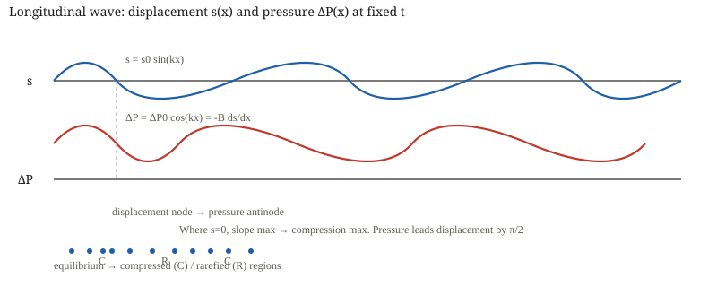
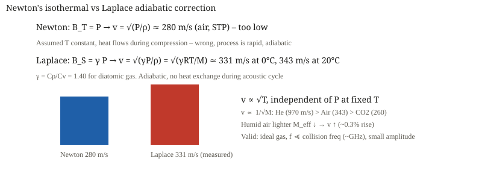
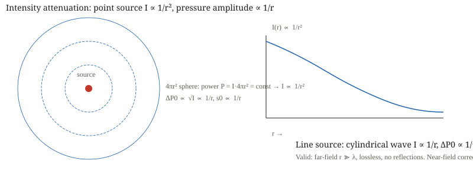
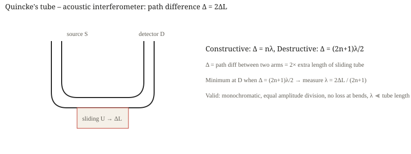
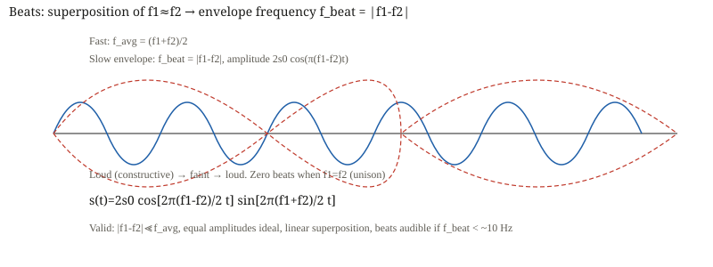

Sound Waves & Doppler Effect — first principles to Olympiad
Sound is a longitudinal wave where pressure is the derivative of displacement. This file builds $v=\sqrt{B/\rho}$, Laplace $\sqrt{\gamma P/\rho}$, intensity $I=\Delta P_0^2/2\rho v$, organ pipes with $e\approx0.6r$, beats $f_{\text{beat}}=|f_1-f_2|$, and the complete Doppler $f'=f(v\pm v_o)/(v\mp v_s)$ including wind, 2D projection and Mach cone $\sin\alpha=1/M$. Every boxed result carries its validity.
1 · Foundations & Physical Motivation
Definition — longitudinal wave
Displacement

Particle velocity $u=\partial s/\partial t$, density variation $\Delta\rho=-\rho_0\partial s/\partial x$. Where $s=0$, slope maximal → compression maximal.
2 · Core Derivations & Asymptotic Limits
2.1 Speed $v=\sqrt{B/\rho}$
Slab $A\,dx$, mass $\rho A\,dx$, net force $-A\partial\Delta P/\partial x\,dx = AB\,\partial^2s/\partial x^2\,dx$ → wave equation $\partial^2s/\partial t^2=(B/\rho)\partial^2s/\partial x^2$.
Validity: adiabatic $B_S$, homogeneous, isotropic, small amplitude. Limit $B\to\infty$ → $v\to\infty$ ✓.

2.2 Newton vs Laplace
Newton: $PV=$ const → $B_T=P$ → $v=\sqrt{P/\rho}\approx280$ m/s at STP – too low.
Laplace: $PV^\gamma=$ const → $B_S=\gamma P$ →
At $273$ K, $\gamma=1.4$, $M=29$ g/mol → $331$ m/s. Validity: ideal gas, adiabatic, $f\ll$ GHz.

2.3 Intensity
Average intensity $I=\Delta P_0^2/(2\rho v)=\tfrac12\rho v\omega^2 s_0^2$. Decibel $\beta=10\log_{10}(I/I_0)$, $I_0=10^{-12}$ W/m².
Point source $I\propto1/r^2$, $\Delta P_0\propto1/r$; line source $I\propto1/r$, $\Delta P_0\propto1/\sqrt r$. Validity: far-field $r\gg\lambda$.

2.4 Organ pipes
Closed end: $s=0$ node, $\Delta P$ antinode. Open end: $\Delta P=0$ node, $s$ antinode.
End-correction $e\approx0.6r$, $L_{\text{eff}}=L+e$ closed, $L+2e$ open. Validity: $r\ll\lambda$, $r\ll L$.

2.5 Resonance tube


2.6 Interference & beats
Quincke: $\Delta=2\Delta L$, destructive $(2n+1)\lambda/2$.


2.7 Doppler
Moving source: $\lambda'=(v\mp v_s)/f$, $f'=fv/(v\mp v_s)$. Moving observer: $f'=f(v\pm v_o)/v$.
Wind: $v_{\text{eff}}=v\pm w$ →
2D: $f'=f(v-v_o\cos\theta_o)/(v-v_s\cos\theta_s)$ – only line-of-sight components.


2.8 Echo & Mach


3 · Interleaved Exemplars
$\omega=1000$, $s_0=2\times10^{-6}$, $\Delta P_0=\rho v\omega s_0=0.48$ Pa.
Solution
$\Delta P_0=\rho v\omega s_0=1.2\cdot200\cdot1000\cdot2e-6=0.48$ Pa. Check $B=\rho v^2$, $Bk s_0$ same ✓.
Solution
$v=\sqrt{\gamma RT/M}=\sqrt{(5/3)8.314\cdot293/0.004}=1007$ m/s. Lighter $M$ → larger $v$ ✓.
Solution
$I=P/4\pi r^2=7.96\times10^{-5}$ W/m², $\beta=79$ dB, $\Delta P_0=0.256$ Pa. Check $I\propto1/r^2$ ✓.
Solution
$f_1=v/4L=100$ Hz, $f_3=300$ Hz. With $e=1.2$ cm → $98.6$ Hz. End-correction lowers $f$ ✓.
Solution
$v=2f(l_2-l_1)=344$ m/s, $e=(l_2-3l_1)/2=3$ mm ✓.
Solution
$f_{\text{beat}}=2$ Hz, period $0.5$ s. Wax ↓ $f$, filing ↑ $f$ ✓.
Solution
$f'=fv/(v-v_s)=1097$ Hz approaching, $919$ Hz receding. Check $v_s\to v$ → $f'\to\infty$ ✓.
Solution
$f'=f(v+v_o)/v=1088$ Hz. Source moving gives larger shift than observer moving same speed – asymmetry ✓.
Solution
$f_{\text{echo}}=f(v+v_w)/(v-v_w)\approx f(1+2v_w/v)$. Double shift ✓.
Solution
$\sin\alpha=1/2$ → $30°$. Check $M=1$ → $90°$ ✓.
4 · JEE Advanced Advantage
Impedance method
$Z=\rho v$, reflection $R=((Z_2-Z_1)/(Z_2+Z_1))^2$. Open end $Z_2\approx0$ → pressure node, closed $Z_2\to\infty$ → displacement node. Same as strings.
Sign-free Doppler
Draw S→O arrow. Project $v_s$, $v_o$. Toward = higher $f$. Source toward → denominator smaller. Observer toward → numerator larger. Wind $v\to v\pm w$ cancels if S&O stationary.
Closest approach glide
$f'(t)=fv/(v-v_{s\parallel}(t))$, $v_{s\parallel}=v_s^2t/\sqrt{b^2+v_s^2t^2}$, $f'=f$ at $t=0$, slope $df'/dt|_0=-fv_s^2/(vb)$.
5 · Examiner Traps
Trap: displacement node = pressure node
Wrong. Closed $s=0$ node → $\Delta P$ antinode. Open $s$ antinode → $\Delta P=0$ node. Mark on diagram.
Trap: $v=\sqrt{P/\rho}$
Newton isothermal 280 m/s wrong; Laplace adiabatic 331 m/s correct. Condition: rapid → adiabatic.
Trap: dB 10 log vs 20 log
$I\propto\Delta P^2$, so $10\log I$ = $20\log\Delta P$. Doubling $I$ → +3 dB, doubling $P$ → +6 dB.
Trap: end-correction factor 2
Closed $L+e$, open $L+2e$. Forgetting 2 is classic.
Trap: Doppler symmetry
Source moving vs observer moving same speed give different $f'$ (1097 vs 1088 Hz). Don't use symmetric formula.
Trap: wind changes frequency when S&O stationary
No – $f'=f(v+w)/(v+w)=f$. Wind only matters if S or O moves relative to medium.
Trap: beats $f_{\text{beat}}=|f_1-f_2|/2$
Envelope $ |f_1-f_2|/2$, intensity beats $|f_1-f_2|$.
Trap: closed pipe $f_n=nv/4L$
Wrong – only odd: $f_n=(2n-1)v/4L$. Second overtone $5v/4L$.
6 · Topic Playbook
Triage: speed? → $v=\sqrt{\gamma RT/M}$; intensity? → $I\propto1/r^2$; pipes? → identify ends, $L=(2n-1)\lambda/4$ vs $n\lambda/2$, $e$; beats? → $|f_1-f_2|$; Doppler? → who moves? source $λ$ changes, observer $v_{\text{rel}}$ changes, wind $v\to v\pm w$, 2D project $\cos\theta$, echo double, Mach $\sin\alpha=1/M$.
Numbers: $v(20°C)=343$ m/s, $0.6$ m/s/°C, $Z≈400$ rayl, $I_0=10^{-12}$, $e≈0.6r$, $f_{\text{beat}}=|f_1-f_2|$, $M=2→30°$.
7 · Olympiad Paper (36Q)
See the portable Markdown edition for full 36-question paper with solutions. This HTML holds 15 exemplars; the master MD holds 48+36.
$f_1=170$ Hz.
Solution
$v/4L=170$ Hz ✓.
Solution
$I=1/4π100=7.96×10^{-4}$ W/m².
Solution
4 Hz.
Solution
$1111$ Hz.
Solution
$30°$.
8 · Formula Sheet
| Formula | Validity |
|---|---|
| small strain, adiabatic $B_S$ | |
| homogeneous, lossless | |
| ideal gas, adiabatic | |
| traveling plane wave | |
| odd only, | |
| all, | |
| resonance tube | |
| uniform wind | |
| 2D projection | |
| double shift | |
| supersonic |
Next: Back to top →